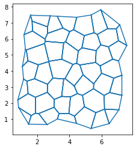
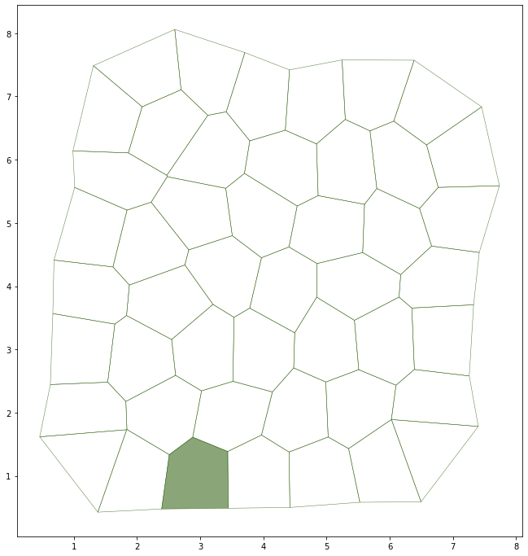

Packing and influence on cell motility¶
Some time ago Hadrien Mary @Hadim_ asked me if tyssue could reproduce this work:
The subtle mechanics of densely packed cells may help explain why some cancerous tumors stay put while others spread https://t.co/G6lbhLhQxQ pic.twitter.com/AK9SzzUazU
— Quanta Magazine (@QuantaMagazine) 11 septembre 2017

Illustration is from Lucy Reading @LucyIkkanda
The relevant model is described in Mapeng Bi et al. (nature physics version ($$))
The master equation is the following:
\[\epsilon = \sum_\alpha \left[ (a_\alpha - 1)^2 + \frac{(p_\alpha - p_0)^2}{r}\right]\]
With a unit prefered area and \(p_\alpha\) the cell perimeter.
Imports¶
import numpy as np
import pandas as pd
from tyssue import config, Sheet, PlanarGeometry
from tyssue.solvers import QSSolver
from tyssue.solvers.viscous import EulerSolver
from tyssue.draw import sheet_view
from tyssue.dynamics.factory import model_factory
from tyssue.dynamics import effectors, units
from tyssue.utils import to_nd
from tyssue.utils.testing import effector_tester, model_tester
from tyssue.behaviors import EventManager
from tyssue.behaviors.sheet import basic_events
from tyssue.draw import highlight_faces, create_gif
Create a 2D patch of cells¶
geom = PlanarGeometry
sheet = Sheet.planar_sheet_2d('jam', 15, 15, 1, 1, noise=0.2)
geom.update_all(sheet)
sheet.remove(sheet.cut_out([[0, 8], [0, 8]]), trim_borders=True)
sheet.sanitize()
geom.scale(sheet, sheet.face_df.area.mean()**-0.5, ['x', 'y'])
geom.update_all(sheet)
sheet.reset_index()
sheet.reset_topo()
fig, ax = sheet_view(sheet, mode="quick")

Define the relevant mechanical components¶
# Adding some gigling
class BrownianMotion(effectors.AbstractEffector):
label = 'Brownian Motion'
element = 'vert'
specs = {"settings": {"temperature": 1e-3}}
def energy(eptm):
T = eptm.settings['temperature']
return np.ones(eptm.Nv) * T / eptm.Nv
def gradient(eptm):
T = eptm.settings['temperature']
scale = T/eptm.edge_df.length.mean()
grad = pd.DataFrame(
data=np.random.normal(0, scale=scale, size=(eptm.Nv, eptm.dim)),
index=eptm.vert_df.index,
columns=['g'+c for c in eptm.coords]
)
return grad, None
Quasistatic gradient descent¶
With only the conservative potential terms
model = model_factory(
[effectors.PerimeterElasticity,
effectors.FaceAreaElasticity])
model_specs = {
'face': {
'area_elasticity': 1.,
'prefered_area': 1.,
'perimeter_elasticity': 0.1, # 1/2r in the master equation
'prefered_perimeter': 3.81,
},
'edge': {
'ux': 0,
'uy': 0,
'is_active': 1,
'line_tension': 0.0
},
'settings': {'temperature': 1e-2}
}
sheet.update_specs(model_specs, reset=True)
res = QSSolver().find_energy_min(sheet, PlanarGeometry, model)
print(res.message)
Reseting column ux of the edge dataset with new specs
Reseting column uy of the edge dataset with new specs
CONVERGENCE: REL_REDUCTION_OF_F_<=_FACTR*EPSMCH
Backup so we can play with parameters
bck = sheet.copy()
Pulling on a face¶
def tract(eptm, face, pull_axis, value, pull_column='line_tension', face_id=None):
"""Modeling face traction as shrinking apical junctions on the neighouring cells,
As if pseudopods where pulling between the cells
"""
pull_axis = np.asarray(pull_axis)
edges = eptm.edge_df.query(f'face == {face}')
verts = edges['srce'].values
r_ai = edges[["r"+c for c in eptm.coords]].values
proj = (r_ai * pull_axis[None, :]).sum(axis=1)
pulling_vert = verts[np.argmax(proj)]
v_edges = eptm.edge_df.query(
f'(srce == {pulling_vert}) & (face != {face})'
)
pulling_edges = v_edges[~v_edges['trgt'].isin(verts)].index
eptm.edge_df[pull_column] = 0
if pulling_edges.size:
eptm.edge_df.loc[pulling_edges, pull_column] = value
default_traction_spec = {
"face": -1,
"face_id": -1,
"pull_axis": [0.1, 0.9],
"value": 4,
"pull_column": "line_tension"
}
from tyssue.utils.decorators import face_lookup
@face_lookup
def traction(sheet, manager, **kwargs):
traction_spec = default_traction_spec
traction_spec.update(**kwargs)
pulling = tract(sheet, **traction_spec)
manager.append(traction, **traction_spec)
pulled = 2
Simple visualisation¶
highlight_faces(sheet.face_df, [pulled,], reset_visible=True)
fig, ax = sheet_view(
sheet,
mode="2D",
face={"visible": True},
edge={"head_width": 0.0},
vert={"visible": False})
fig.set_size_inches(12, 12)

Model with all the components¶
model = model_factory(
[effectors.PerimeterElasticity,
BrownianMotion,
effectors.LineTension,
effectors.FaceAreaElasticity])
Setup the event manager and the solver¶
sheet = bck.copy()
# setting up values for the whole epithelium
model_specs = {
'face': {
'area_elasticity': 1.,
'prefered_area': 1.,
'perimeter_elasticity': 0.05, # 1/2r in the master equation
'prefered_perimeter': 3.81,
"id": sheet.face_df.index
},
'vert': {
"viscosity": 1.0
},
'edge': {'ux': 0, 'uy': 0},
'settings': {
'temperature': 2e-1,
"p_4": 10.0,
"p_5p": 1.0,
"threshold_length": 2e-2
}
}
sheet.update_specs(model_specs, reset=True)
# This allows to auomaticaly solve topology changes
manager = EventManager("face", )
manager.append(basic_events.reconnect)
manager.append(traction, face_id=pulled)
# Implicit Euler solver
solver = EulerSolver(
sheet,
geom,
model,
manager=manager,
bounds=(
-sheet.edge_df.length.median()/10,
sheet.edge_df.length.median()/10
)
)
manager.update()
sheet.face_df['prefered_perimeter'] = 3.8
Reseting column area_elasticity of the face dataset with new specs
Reseting column prefered_area of the face dataset with new specs
Reseting column perimeter_elasticity of the face dataset with new specs
Reseting column prefered_perimeter of the face dataset with new specs
Reseting column id of the face dataset with new specs
Reseting column ux of the edge dataset with new specs
Reseting column uy of the edge dataset with new specs
Run the solver¶
solver.solve(tf=120.0, dt=0.1)
highlight_faces(sheet.face_df, [pulled,], reset_visible=True)
fig, ax = sheet_view(
sheet,
mode="2D",
face={"visible": True},
edge={"head_width": 0.0, "color": sheet.edge_df["line_tension"]},
vert={"visible": False}
)
fig.set_size_inches(6, 6)
---------------------------------------------------------------------------
KeyboardInterrupt Traceback (most recent call last)
<ipython-input-11-44dcd6235ffd> in <module>
----> 1 solver.solve(tf=120.0, dt=0.1)
2
3 highlight_faces(sheet.face_df, [pulled,], reset_visible=True)
4
5 fig, ax = sheet_view(
~/miniconda3/envs/tyssue/lib/python3.9/site-packages/tyssue-0.8.1-py3.9-linux-x86_64.egg/tyssue/solvers/viscous.py in solve(self, tf, dt, on_topo_change, topo_change_args)
125 for t in np.arange(self.prev_t, tf + dt, dt):
126 pos = self.current_pos
--> 127 dot_r = self.ode_func(t, pos)
128 if self.bounds is not None:
129 dot_r = np.clip(dot_r, *self.bounds)
~/miniconda3/envs/tyssue/lib/python3.9/site-packages/tyssue-0.8.1-py3.9-linux-x86_64.egg/tyssue/solvers/viscous.py in ode_func(self, t, pos)
156 """
157
--> 158 grad_U = self.model.compute_gradient(self.eptm).loc[self.eptm.active_verts]
159 return (
160 -grad_U.values
~/miniconda3/envs/tyssue/lib/python3.9/site-packages/tyssue-0.8.1-py3.9-linux-x86_64.egg/tyssue/dynamics/factory.py in compute_gradient(eptm, components)
103 def compute_gradient(eptm, components=False):
104 norm_factor = eptm.specs["settings"].get("nrj_norm_factor", 1)
--> 105 grads = [f.gradient(eptm) for f in effectors]
106 if components:
107 return grads
~/miniconda3/envs/tyssue/lib/python3.9/site-packages/tyssue-0.8.1-py3.9-linux-x86_64.egg/tyssue/dynamics/factory.py in <listcomp>(.0)
103 def compute_gradient(eptm, components=False):
104 norm_factor = eptm.specs["settings"].get("nrj_norm_factor", 1)
--> 105 grads = [f.gradient(eptm) for f in effectors]
106 if components:
107 return grads
~/miniconda3/envs/tyssue/lib/python3.9/site-packages/tyssue-0.8.1-py3.9-linux-x86_64.egg/tyssue/dynamics/effectors.py in gradient(eptm)
197
198 if len(eptm.coords) == 2:
--> 199 grad_a_srce, grad_a_trgt = area_grad2d(eptm)
200 elif len(eptm.coords) == 3:
201 grad_a_srce, grad_a_trgt = area_grad(eptm)
~/miniconda3/envs/tyssue/lib/python3.9/site-packages/tyssue-0.8.1-py3.9-linux-x86_64.egg/tyssue/dynamics/planar_gradients.py in area_grad(sheet)
7
8 coords = sheet.coords
----> 9 inv_area = sheet.edge_df.eval("1 / (4 * sub_area)")
10
11 face_pos = sheet.edge_df[["f" + c for c in coords]]
~/miniconda3/envs/tyssue/lib/python3.9/site-packages/pandas/core/frame.py in eval(self, expr, inplace, **kwargs)
3597 kwargs["resolvers"] = kwargs.get("resolvers", ()) + tuple(resolvers)
3598
-> 3599 return _eval(expr, inplace=inplace, **kwargs)
3600
3601 def select_dtypes(self, include=None, exclude=None) -> DataFrame:
~/miniconda3/envs/tyssue/lib/python3.9/site-packages/pandas/core/computation/eval.py in eval(expr, parser, engine, truediv, local_dict, global_dict, resolvers, level, target, inplace)
345 eng = ENGINES[engine]
346 eng_inst = eng(parsed_expr)
--> 347 ret = eng_inst.evaluate()
348
349 if parsed_expr.assigner is None:
~/miniconda3/envs/tyssue/lib/python3.9/site-packages/pandas/core/computation/engines.py in evaluate(self)
68 """
69 if not self._is_aligned:
---> 70 self.result_type, self.aligned_axes = align_terms(self.expr.terms)
71
72 # make sure no names in resolvers and locals/globals clash
~/miniconda3/envs/tyssue/lib/python3.9/site-packages/pandas/core/computation/align.py in align_terms(terms)
148
149 # perform the main alignment
--> 150 typ, axes = _align_core(terms)
151 return typ, axes
152
~/miniconda3/envs/tyssue/lib/python3.9/site-packages/pandas/core/computation/align.py in wrapper(terms)
66 return result_type_many(*term_values), None
67
---> 68 return f(terms)
69
70 return wrapper
~/miniconda3/envs/tyssue/lib/python3.9/site-packages/pandas/core/computation/align.py in _align_core(terms)
78 from pandas import Series
79
---> 80 ndims = Series(dict(zip(term_index, term_dims)))
81
82 # initial axes are the axes of the largest-axis'd term
~/miniconda3/envs/tyssue/lib/python3.9/site-packages/pandas/core/series.py in __init__(self, data, index, dtype, name, copy, fastpath)
316 data = data._mgr
317 elif is_dict_like(data):
--> 318 data, index = self._init_dict(data, index, dtype)
319 dtype = None
320 copy = False
~/miniconda3/envs/tyssue/lib/python3.9/site-packages/pandas/core/series.py in _init_dict(self, data, index, dtype)
409
410 # TODO: passing np.float64 to not break anything yet. See GH-17261
--> 411 s = create_series_with_explicit_dtype(
412 values, index=keys, dtype=dtype, dtype_if_empty=np.float64
413 )
~/miniconda3/envs/tyssue/lib/python3.9/site-packages/pandas/core/construction.py in create_series_with_explicit_dtype(data, index, dtype, name, copy, fastpath, dtype_if_empty)
664 if is_empty_data(data) and dtype is None:
665 dtype = dtype_if_empty
--> 666 return Series(
667 data=data, index=index, dtype=dtype, name=name, copy=copy, fastpath=fastpath
668 )
~/miniconda3/envs/tyssue/lib/python3.9/site-packages/pandas/core/series.py in __init__(self, data, index, dtype, name, copy, fastpath)
364 data = sanitize_array(data, index, dtype, copy, raise_cast_failure=True)
365
--> 366 data = SingleBlockManager.from_array(data, index)
367
368 generic.NDFrame.__init__(self, data)
~/miniconda3/envs/tyssue/lib/python3.9/site-packages/pandas/core/internals/managers.py in from_array(cls, array, index)
1580 Constructor for if we have an array that is not yet a Block.
1581 """
-> 1582 block = make_block(array, placement=slice(0, len(index)), ndim=1)
1583 return cls(block, index)
1584
~/miniconda3/envs/tyssue/lib/python3.9/site-packages/pandas/core/internals/blocks.py in make_block(values, placement, klass, ndim, dtype)
2723 if klass is None:
2724 dtype = dtype or values.dtype
-> 2725 klass = get_block_type(values, dtype)
2726
2727 elif klass is DatetimeTZBlock and not is_datetime64tz_dtype(values.dtype):
~/miniconda3/envs/tyssue/lib/python3.9/site-packages/pandas/core/internals/blocks.py in get_block_type(values, dtype)
2688 elif is_datetime64tz_dtype(values.dtype):
2689 cls = DatetimeTZBlock
-> 2690 elif is_interval_dtype(dtype) or is_period_dtype(dtype):
2691 cls = ObjectValuesExtensionBlock
2692 elif is_extension_array_dtype(values.dtype):
~/miniconda3/envs/tyssue/lib/python3.9/site-packages/pandas/core/dtypes/common.py in is_period_dtype(arr_or_dtype)
494 if arr_or_dtype is None:
495 return False
--> 496 return PeriodDtype.is_dtype(arr_or_dtype)
497
498
KeyboardInterrupt:
Define a simple drawing function¶
def view(sheet):
highlight_faces(sheet.face_df, [pulled], reset_visible=True)
geom.update_all(sheet)
if sheet.edge_df['line_tension'].max():
ecolor = sheet.edge_df['line_tension']
else:
ecolor = "#aaaaaa"
fig, ax = sheet_view(
sheet,
mode="2D",
face={"visible": True},
edge={"head_width": 0.0, "color": ecolor, "width": 2},
vert={"visible": False}
)
fig.set_size_inches(8, 8)
ax.set_xticks([])
ax.set_yticks([])
return fig, ax
Create a gif of the resulting simulation¶
create_gif(solver.history, "demo.gif", draw_func=view, num_frames=120)
solver.history.time_stamps
array([0.000e+00, 1.000e-01, 2.000e-01, ..., 1.198e+02, 1.199e+02,
1.200e+02])
from IPython.display import Image
Image("demo.gif")
<IPython.core.display.Image object>